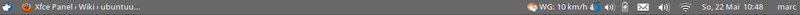
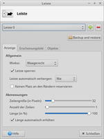
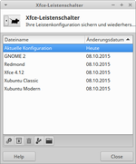
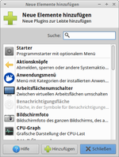
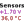
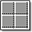

Xfce Panel
Dieser Artikel wurde für die folgenden Ubuntu-Versionen getestet:
Dieser Artikel ist größtenteils für alle Ubuntu-Versionen gültig.
Zum Verständnis dieses Artikels sind folgende Seiten hilfreich:
Installation von Programmen, optional
Bearbeiten von Paketquellen, optional
Ein Terminal öffnen, optional
Einen Editor öffnen, optional
 Das Xfce-Panel wurde im Laufe der Entwicklung von Xfce mehrfach überarbeitet. So wurde es beispielsweise in Xfce 4.4 gegenüber den Vorgängerversionen komplett neu geschrieben und enthält nun Bindungen für Python (Pyxfce
Das Xfce-Panel wurde im Laufe der Entwicklung von Xfce mehrfach überarbeitet. So wurde es beispielsweise in Xfce 4.4 gegenüber den Vorgängerversionen komplett neu geschrieben und enthält nun Bindungen für Python (Pyxfce  ) sowie Perl. Damit soll es für Programmierer einfacher sein, Plugins für das Panel entwickeln zu können.
) sowie Perl. Damit soll es für Programmierer einfacher sein, Plugins für das Panel entwickeln zu können.
Der aktuelle Entwicklungsstand des Panels unterstützt mehrere Instanzen, eine freie Platzierung, Programmstarter, Panelmenüs, eine Taskleiste, einen Terminkalender, einen Desktop-Switcher für virtuelle Desktops und vieles mehr.

Sollte das Panel einmal nicht funktionieren, bietet der Artikel Xfce Startbefehle Hilfe.
Panel¶

Um die Menüleiste einzurichten, führt man einen Rechtsklick  auf die gewünschte Leiste aus und wählt den Menüpunkt "Leiste einrichten". Alternativ kann man den Einstellungsmanager verwenden.
auf die gewünschte Leiste aus und wählt den Menüpunkt "Leiste einrichten". Alternativ kann man den Einstellungsmanager verwenden.
Folgende Optionen sind in der Leisten-Verwaltung einstellbar:
Anzeige (Größe, Position (links, rechts, oben oder unten; vorher Leiste entsperren), Breite usw.)
Erscheinungsbild (Hintergrund, Transparenz)
Objekte (enthaltene Elemente anzeigen und verwalten)
Außerdem können bei Bedarf weitere Leisten hinzugefügt bzw. entfernt werden. Xubuntu nutzte beispielsweise bis 13.10 in der Standard-Konfiguration eine zweite Leiste am unteren Bildschirmrand, die automatisch ausgeblendet wurde. Ab 14.04 wird in der Voreinstellung nur noch ein Panel verwendet.

Ab Xubuntu 15.10 neu hinzugekommen ist die Anwendung Xfce Panel Switch , mit der bequem zwischen verschiedenen Panel-Layouts umgeschaltet werden kann. Fünf verschiedene Profile werden mitgeliefert. Zu finden ist das Programm unter "Einstellungen -> Xfce-Leistenschalter".
Experten-Info:
Vertikale Panels sind erst ab Xfce 4.10 bzw. Ubuntu 12.10 möglich.
Erweiterungen¶
Die hier genannten Erweiterungen sind kleine Plugins für das Xfce-Panel. Sie dienen entweder zur Anzeige von Systembereichen oder als hilfreiche Programme, zum Beispiel für das Ein- und Aushängen von Geräten. In der Standardinstallation sind bereits eine ganze Reihe von Plugins enthalten, weitere können selbst hinzugefügt werden.

Einrichtung¶
Die Einrichtung gestaltet sich relativ einfach. Man führt einen Rechtsklick () auf die gewünschte Menüleiste aus und wählt den Punkt  "Neues Objekt hinzufügen" bzw. "Leiste". Im sich nun öffnenden Dialog "Objekt zur Leiste hinzufügen" / "Neue Elemente hinzufügen..." wählt man die gewünschte Erweiterung aus und bestätigt durch "Hinzufügen" die Auswahl. Mit "Schließen" verlässt man den Einrichtungsdialog. Die Platzierung eines Plugins ist per Drag-and-Drop-Funktion "Verschieben" oder über einen Rechtsklick auf das Objekt möglich. Um eine Erweiterung wieder aus dem Panel zu entfernen, führt man einen Rechtsklick auf diese aus und wählt den Punkt "Entfernen". Alternativ kann dies über den Einstellungsmanager erfolgen.
"Neues Objekt hinzufügen" bzw. "Leiste". Im sich nun öffnenden Dialog "Objekt zur Leiste hinzufügen" / "Neue Elemente hinzufügen..." wählt man die gewünschte Erweiterung aus und bestätigt durch "Hinzufügen" die Auswahl. Mit "Schließen" verlässt man den Einrichtungsdialog. Die Platzierung eines Plugins ist per Drag-and-Drop-Funktion "Verschieben" oder über einen Rechtsklick auf das Objekt möglich. Um eine Erweiterung wieder aus dem Panel zu entfernen, führt man einen Rechtsklick auf diese aus und wählt den Punkt "Entfernen". Alternativ kann dies über den Einstellungsmanager erfolgen.
Es gibt eine Vielzahl von Erweiterungen - je nach verwendeter Version von Xubuntu können diese leicht variieren:
| Erweiterungen | |
| Icon | Beschreibung |
 | Anwendungsmenü, ab Xubuntu 14.04 durch Whisker Menu ersetzt |
 | Programmstarter mit optionalem Menü |
| Schaltfläche zum Abmelden, Herunterfahren etc. anzeigen | |
| Arbeitsoberfläche anzeigen oder verstecken | |
| Statusanzeige für die Batterie, kompatibel mit APM und ACPI | |
| Benachrichtigungsfläche (Systray) | |
 | mit Lesezeichen durch das Dateisystem ("Orte") navigieren |
| zeigt die aktuelle Prozessor-Auslastung an (basierend auf top) | |
| Online-Abfrage-Plugin für ein Übersetzungslexikon (Serverliste) | |
| Fensterliste - zeigt alle aktuell verfügbaren Fenster an | |
| Visualisieren des HDAPS-Status | |
|  | Sensoren überwachen |
 | alle einhängbaren Geräte anzeigen und per Mausklick ein- bzw. aushängen |
| CPU-Governor anzeigen | |
| zeigt die Symbole aller laufenden Anwendungen an | |
| Lautstärkeregler | |
| einfache Suche | |
| komfortabler E-Mail Checker (für IMAP, POP3 und Gmail) | |
| Anzeige des Netzwerkverkehrs | |
| kleiner und einfacher Notizblock für das Panel | |
| der Kalender Orage | |
|  | Pager, zeigt eine Miniaturansicht aller virtuellen Arbeitsflächen; ist per Voreinstellung aktiviert |
| Schnellzugriff auf den Papierkorb | |
| schneller Zugriff per Auswahlmenü auf die wichtigsten Verzeichnisse und Orte | |
| Xfce/Bildschirmfoto erstellen | |
| Smart Bookmark - schneller Zugriff auf eine bevorzugte Webseite bzw. deren Unterseiten | |
| zeigt die Festplattenbelegung an | |
 | Statusanzeige der Systemauslastung |
| alle laufenden Anwendungen anzeigen | |
| Umschalter zwischen verschiedenen Tastaturlayouts | |
| Trennlinie / Abstand hinzufügen. | |
| Verve Kommandozeile - kleines aber mächtiges Plugin, um Programme und mehr auszuführen | |
| Datum, Uhrzeit und Kalender | |
| zeigt das aktuelle Wetter | |
| Applets von GNOME 2 mit XfApplet verwenden | |
| Zwischenablage | |
| Bildschirmhelligkeit über das Panel regeln | |
Weitere Plugins hinzufügen¶
Es ist ohne weiteres möglich, weitere Plugins hinzuzufügen. Diese sind entweder in der Paketverwaltung zu finden oder müssen selbst kompiliert werden. Eine umfangreiche Sammlung von Plugins findet man bei Xfce Goodies .
Kompilierung¶
Die notwendigen Schritte, um das gewünschte Plugin zu kompilieren, erfährt man auf der jeweiligen Homepage oder entnimmt es der mitgelieferten Datei README.
Problembehebung¶
Allgemein¶
Um Problemen bei der Nutzung des Panels oder von Plugins auf die Schliche zu kommen, öffnet man ein Terminalfenster und am besten auch gleich einen Dateimanager sowie einen Webbrowser, um im Internet recherchieren zu können. Im Terminalfenster wird nun das Panel beendet und mit einer aktivierten Fehlerausgabe (Debug-Modus ) wieder aufgerufen:
xfce4-panel -q PANEL_DEBUG=1 xfce4-panel
Nun wiederholt man die vorher gescheiterte Aktion. Im Terminal sollten sich so weitere Hinweise auf das Problem finden lassen, beispielsweise eine oder mehrere fehlende Dateien. Möchte man den Debug-Modus wieder beenden, erreicht man dies mit der Tastenkombination Strg + C . Zum Schluss startet man das Panel wieder:
xfce4-panel &
Benachrichtigungsfeld¶
Das Benachrichtigungsfeld ("systray", "tray area") ist ein Abschnitt im Panel, der unter anderem das Symbol für die Einrichtung des Netzwerks mit dem Network-Manager enthält. Hat man diesen Abschnitt aus dem Panel verloren, kann man im Ordner ~/.config/xfce4/panel nach einer Konfigurationsdatei systray-n.rc suchen und trägt dann mit einem Editor [4] in die Datei ~/.config/xfce4/panel/panels.xml z.B. für das Fundstück systray-4.rc die Zeile
<item name="systray" id="4"/>
an geeigneter Stelle in die panels.xml ein und speichert die Datei. Dann die Anwendung xfce4-panel beenden [3]:
pkill xfce4-panel
und neu starten mit:
xfce4-panel &
Siehe auch Xfce Startbefehle. Anschließend abmelden und dabei die Sitzung speichern.
Andere Schriftart und -größe¶
Möchte man im Panel eine andere Schriftart oder -größe als für die anderen Komponenten der Desktop-Umgebung haben, dann kann man dafür in der Datei ~/.gtkrc-2.0 einen Eintrag vornehmen, der die Einstellungen des Erscheinungsbilds überschreibt.
style "xfce-panel-font" {
font_name="NAME SIZE"
}
widget "*Xfce*Panel*" style "xfce-panel-font"Im Wert für font_name entspricht dann NAME natürlich dem Namen der Schriftart (bspw. Droid Sans) und SIZE der Schriftgröße als einfache Zahl ohne Angabe der Einheit (bspw. 10).
Hinweis:
Für Versionen älter als 14.04: u.U. muss statt dem = hinter font_name ein Leerzeichen stehen.
Task- bzw. Fensterleiste Abstand verschwunden¶
In der oberen Leiste ist der Abstand zwischen den Bedienelementen und der Taskleiste bzw. Fensterleiste verschwunden. Die Symbole rechts davon werden durch geöffnete Fenster nach rechts verschoben. Als Lösung fügt man ein Trennelement rechts neben der Fensterleiste ein. Mit einem Rechtsklick ändert man Eigenschaften und Stil des Trennelements auf durchsichtig und ausdehnen.
So lassen sich auch Programmstarter auf zwei gegenüberliegenden Seiten verteilen.
- Erstellt mit Inyoka
-
 2004 – 2017 ubuntuusers.de • Einige Rechte vorbehalten
2004 – 2017 ubuntuusers.de • Einige Rechte vorbehalten
Lizenz • Kontakt • Datenschutz • Impressum • Serverstatus -
Serverhousing gespendet von